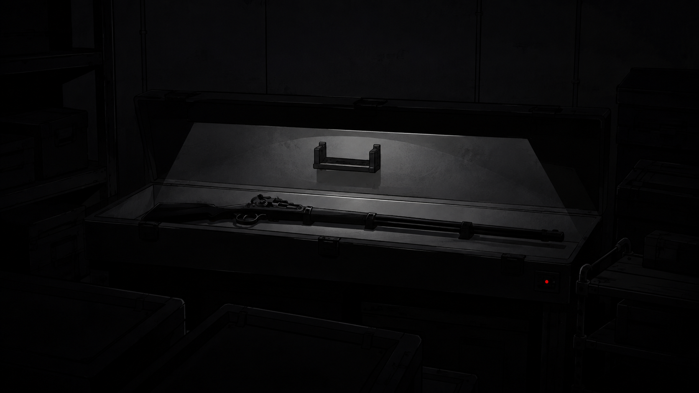

Final B
Final B
블루와 옐로, 핑크는 블랙을 연구소에 남겨 조사에 협조시키기로 했다. 박사는 블랙의 머스킷과 변신 장치를 보관함에 넣고 잠갔다.
“블랙은 출동하지 않아용. 카오스에서 직접 보고 들은 일을 전부 기록하고, 세 사람이 묻는 말에 답해용. 추측은 사실과 나눠서 적어용.”
블랙은 빈 기록지를 받아 들고 자신이 다녀온 길부터 적기 시작했다.
블루는 블랙이 적은 경로를 자신이 다녀온 길과 대조해 다른 부분을 표시했다. 옐로는 빠진 갈림길을 적었고, 핑크는 작전 중 오간 통신과 기록을 하나씩 맞췄다.
블랙은 직접 가 본 길과 기억이 흐린 길을 나눠 다시 작성했다. 기억나지 않는 갈림길은 비워 뒀다.
반년 동안 블랙은 출동하지 않았다. 세 사람은 카오스 경로를 확인할 때만 그를 작전실로 불렀고, 블랙은 자신이 작성한 기록을 펴 놓고 질문에 답했다.
어느 날, 현장에 나간 세 사람은 블랙의 기록과 달리 길이 막혀 있다고 보고했다. 박사는 블랙을 작전실로 불러 통신을 연결했다.
“왼쪽 통로는 직접 가 봤다. 오른쪽은 모른다.”
블루는 옐로에게 돌아갈 길이 열려 있는지 묻고, 핑크에게 통신이 끊기지 않았는지 물었다. 세 사람은 오른쪽 통로를 택했고, 블랙은 더 말하지 않았다. 얼마 뒤 세 사람 모두 무사히 돌아왔다.
작전 보고가 끝난 뒤에도 블루와 옐로, 핑크는 자리를 뜨지 않았다.
“다음부터 작전실에서 통신을 맡아 주세요. 직접 확인한 길만 말해 주세요.”
“어디로 갈지는 우리가 현장에서 정할 거야.”
“모르는 길이면 바로 모른다고 해요.”
“그렇게 하겠다.”
그 뒤 블랙은 작전실에서 세 사람의 통신을 받았다. 길을 묻는 질문에만 답했고, 기록에 없는 구간에서는 모른다고 말했다.
몇 달 뒤, 블루와 옐로, 핑크는 박사에게 보관함을 열어 달라고 했다. 박사는 머스킷을 그대로 둔 채 변신 장치만 꺼내 테이블 위에 놓았다.
“머스킷은 돌려주지 않아. 현장 지휘도 우리가 맡아.”
“현장에서는 사람들을 대피시키는 일을 맡아 주세요.”
“저희가 멈추라고 하면 바로 멈춰요.”
블랙은 세 사람의 말을 끝까지 들었다. 박사는 변신 장치만 건넸다. 머스킷은 보관함에 남았다.

일 년 뒤, 나는 엄마와 아빠의 손을 잡고 집에 가고 있었어.
사람들이 괴인이 나타났다고 소리치며 달려왔어. 엄마와 아빠는 나를 사이에 두고 몸을 숙였어. 예전에는 두 사람을 기다리며 혼자 있었지만, 이번에는 양쪽에서 내 손을 잡고 있었어.
곧 네 명의 미라클 레인저가 사람들 사이로 들어왔어.
블랙, 블루, 옐로, 핑크!
레드는 엄마와 아빠를 찾으러 간 뒤 돌아오지 않았어. 한동안 세 명만 보였는데, 그날은 블랙도 함께 있었어.
블랙은 무기를 들고 있지 않았어. 대신 넘어진 사람을 일으켜 안전한 곳으로 데려갔어. 블루는 괴인을 막았고, 옐로는 사람들이 빠져나갈 길을 열었어. 핑크는 제일 뒤에 남아 아무도 남지 않았는지 살폈어.
핑크가 블랙과 블루, 옐로의 이름을 차례로 불렀어. 세 사람이 모두 대답하자 블루와 옐로, 핑크는 괴인 쪽으로 달려갔고, 블랙은 사람들이 빠져나간 길을 다시 살폈어.
엄마는 레드가 처음부터 두 사람을 찾고 있었다고 말해 줬어.
레드는 돌아오지 않았어. 레드가 함께 있었다면 더 좋았을 것 같아. 그래도 네 사람은 도망치던 사람들을 한 명도 두고 가지 않았어.
나는 블랙, 블루, 옐로, 핑크의 이름을 차례로 불렀어. 네 사람이 모두 돌아본 뒤에는 마지막으로 레드의 이름도 크게 불렀어.